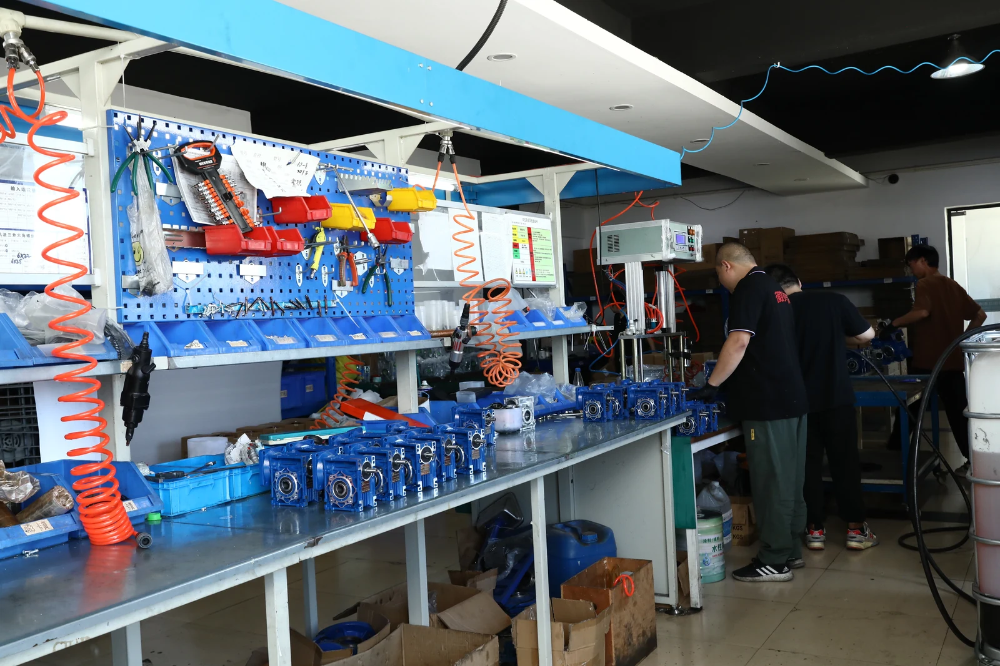

This is original SMK production material showing NMRV worm gearbox assemblies. A direct replacement should be verified from the existing unit’s nameplate and mounting interfaces—not only from its appearance.
1. Record the Existing Gearbox Information
Start with a photo of the gearbox nameplate and record every item that can be read. The useful replacement data is the full model, ratio, input motor power and rated speed, output arrangement and mounting orientation. If the label is missing, take photos of every side and measure the critical interfaces.
| Check | Why it matters | What to send |
|---|---|---|
| Model or center distance | Identifies the product family and approximate installation envelope | Nameplate photo and overall dimensions |
| Ratio | Controls theoretical output speed | For example: 10, 20, 30, 50 or 100:1 |
| Output interface | Determines whether the driven shaft will fit | Hollow-bore diameter, keyway and shaft arrangement |
| Motor input | Ensures the input flange, pilot and shaft match | Motor power, rpm, frame, flange and shaft diameter |
| Mounting and duty | Affects lubrication, plug position, torque and thermal suitability | Mounting photo, running hours, starts and load type |
2. Match the Ratio to the Required Output Speed
Use the motor’s actual rated speed—not only its synchronous speed—to make a first estimate:
Example assumption: a 1400 rpm motor and 50:1 reducer gives a theoretical output speed of 1400 ÷ 50 = 28 rpm. This is a screening calculation only. Induction-motor slip, load and actual rated speed can change the operating result.
For a repeatable estimate, use the worm gearbox ratio and torque calculator. A matching ratio does not prove the gearbox has adequate torque or heat capacity.
3. Confirm the Output Bore and Driven Shaft
Check the actual hollow-bore diameter, keyway, tolerance, retaining method and shaft insertion length. Similar-looking RV sizes can use different output bores, and an imperial shaft does not automatically fit a metric bore. For model-by-model comparison, review the NMRV RV25–RV150 size guide.
4. Check the Motor Flange and Input Interface
For an assembled worm gear motor, confirm motor power, rated rpm, frame, shaft diameter, flange pilot, bolt pattern and input bore. The RV series can be configured with IEC motor interfaces and, where applicable, adapted inputs; these interfaces are configuration-specific. Do not assume that every motor, flange and ratio combination is interchangeable.
If the motor is part of the replacement, compare the electric motor range with the required voltage, frequency, frame and mounting details before finalizing the assembly.
5. Confirm Mounting Position, Lubrication and Duty
A gearbox can look dimensionally correct yet be unsuitable if it is installed in a different orientation or run under a heavier duty. The breather, oil-level and drain-plug positions can change with B3, B6, B7, B8, V5 or V6 mounting. Check the NMRV mounting-position guide before commissioning.
Also state the load type, continuous or intermittent running time, starts per hour, ambient temperature and any shock or reversing duty. These conditions affect service factor, temperature and lubricant selection. For high-temperature or leakage concerns, review the worm gearbox efficiency and temperature guide.
Replacement Checklist Before Ordering
- Existing gearbox nameplate or complete photos
- Motor power, rated speed, voltage and frequency
- Required output speed or reduction ratio
- Required continuous and peak torque
- Output bore, keyway and shaft arrangement
- Motor flange, pilot, bolt pattern and input-shaft dimensions
- Mounting position and output direction
- Operating hours, starts, load type and environment
Need a Worm Gearbox Replacement Check?
Send the nameplate, photos and the checklist details above. SMK Transmission can compare the NMRV configuration, motor interface and dimensional requirements before providing a quotation.